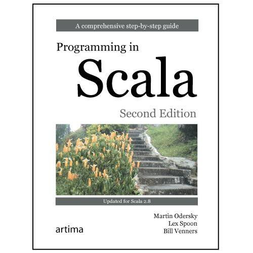
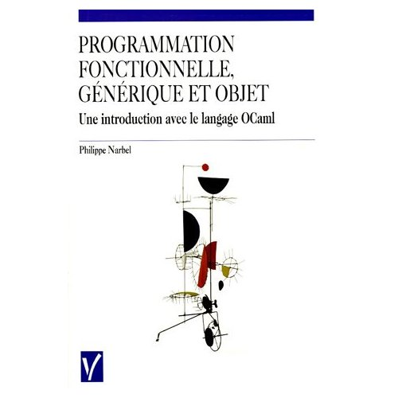
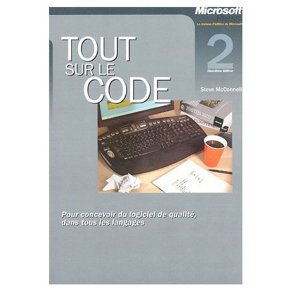
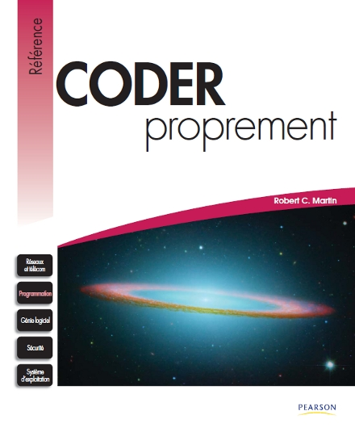
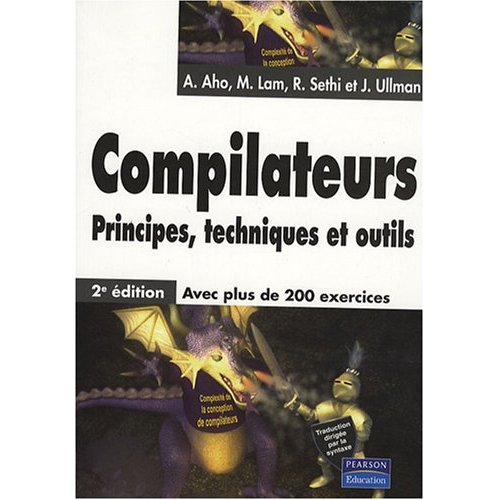
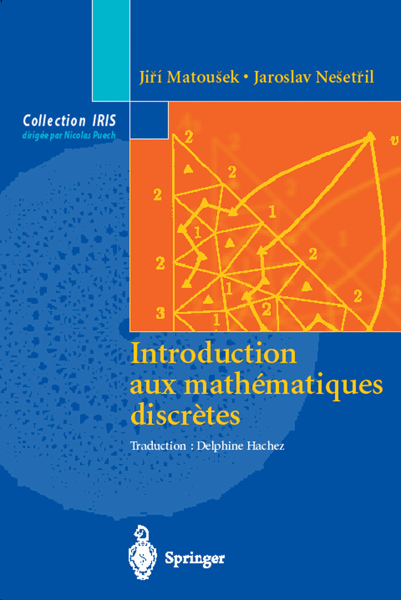

Mes livres préférés d'informatique
Langages et techniques de programmation
Je n'ai pas créé de catégorie "Langages" car je ne trouve pas un livre très intéressant si il ne fait que décrire un langage de programmation.Par contre un livre qui décrit les fonctionnalités d'un langage et nous fait aussi découvrir de nouvelles techniques de programmation en expliquant les concepts sous jacent, est bien plus intéressant.
Programming in scala
Auteurs : Martin Odersky, Lex Spoon, Bill Venners
description
Scala est un langage qui fusionne à merveille les paradignes objet et
fonctionnel.
Martin Odersky (le créateur du langage), Lex Spoon et Bill Venners font
preuvent d'une réel pédagogie.
Ils expliquent les principes de conception de Scala qui sont deux de la
programmation fonctionnel et de l'orienté objet avancé (trait.
Les auteurs vont dans le détail et nous font partager les choix de
conception du langage.
Les chapitres s'enchainent et les exemples sont tous pertinents et
très bien choisis pour comprendre le point abordé.
Avec ses 800 pages, c'est un pavé.
Mais vous pouvez sauter certains chapitres et y revenir plus tard sans
problème.
Ce livre vous apprendrera à programmer en Scala mais vous fera aussi
découvrir des concepts avancés de programmation.
La première édition du livre est disponible gratuitement en ligne
Programmation fonctionnelle, générique et objet : Une introduction avec le langage OCaml
Auteur : Philippe Narbel

C'est avec ce livre que j'ai découvert la programmation
fonctionnelle.
C'est un formidable livre, superbement bien écrit, qui illustre les
forces des différents styles de programmation (fonctionnelle, générique
et objet) et les compare en s'appuyant sur un langage de la famille des
ML : OCaml.
Les langages d'aujourdui sont tous hybrides :
dans sa version 1.5, Java
a introduit une part de la programmation générique à la programmation
objet et compte introduire, dans sa futur version 1.8, les fonctions de
premier ordre et les closures qui sont des concepts empruntés à la
programmation fonctionnel.
Sur ce dernier point, C# est en avance sur Java puisqu'il a déjà
franchit le pas.
Il ne s'agit pas d'une introduction aux concepts élémentaires de la
programmation.
Il est préférable d'avoir une bonne connaissance d'au moins un langage
de programmation.
Bien qu'on peut apprendre OCaml en lisant ce livre, sa vrai valeur se
trouve dans sa description détaillée et précise des différents
paradigmes; fonctionnel, générique et objet.
Design patterns
Auteurs : Eric Freeman , Elisabeth Freeman , Kathy Sierra , Bert Bates
Traductrice : Marie-Cécile Baland
Simple et efficace
Les livres sur les design pattern ne sont pas très digestes, sauf
celui-ci.
Ce livre est conçu pour nous faire découvrir les design patterns.
Il ne nous bombarde pas avec des tonnes de design patterns dont la
description tient sur une page seulement.
En effet, il traite en détail 10 patterns, mais c'est bien suffisant
pour une première découverte.
Je ne suis pas fan de la méthode Tête la pramière qui consiste à répéter
plusieurs fois les mêmes idées de façon différente afin que le lecteur
assimile plus facilement. Je trouve ça assez barbant à la longue mais le
contenu de ce livre est tellement idéal pour découvrir les deisgn
patterns que j'y suis passé outre.
Tout sur le code : Pour concevoir du logiciel de qualité
Auteur : Steven C. McConnell

La référence pour écrire du code de qualité.
On n'est pas forcément d'accord avec tous les conseils donnés.
Certains conseils ne s'appliquent plus aux langages les plus
récents.
Pourtant, c'est un très bon livre qui regorge de bonnes techniques pour
écrire du code plus lisible et donc plus maintenable.
Il y a quelques fautes dans la traduction.
Si vous n'avez pas de difficultés avec l'anglais, préférez sa version
original Code Complete.
Coder proprement
Auteur : Robert C. Martin

Le livre se concentre sur la programmation Java mais les conseils peuvent
s'appliquer à n'importe qu'elle autre langage objet et certains conseils
s'appliquent pour tous les langages.
Comparaison avec "Tout sur le code":
- "Coder proprement" est plus récent
- Les exemples sont donnés exclusivement en Java alors que "Tout sur le code" contient du code écrit dans de nombreux langages VB, C, Java...
- Le ton donné peut paraitre désagréable car l'auteur affirme haut et
fort ses idées sans laisser de place aux compromis.
Au contraire, l'auteur de "Tout sur le code" se base sur des études sérieuses pour appuyer ses propos et discute des alternatives. - Les deux livres partagent des idées communes mais chaqun renferme aussi de bonnes pratiques de programmation que l'autre ne possède pas
Compilateurs : principes, techniques et outils - 2e édition
Auteurs : A. Aho, M. Lam, R. Sethi et J. Ullman

Il peut être considéré comme incomplet car les dernières techniques
d'analyse ne sont pas étudiées.
C'est en tout cas un très bon livre pour s'initier aux techniques de
compilation.
Pour la programmation en C il y a le K&R. Pour les
compilateurs il y a le "Dragon Book".
Mathématiques appliquées à l'informatique
Mathématiques concrètes : Fondations pour l'informatique
Auteurs : Robin-Lee Graham, Donald-E Knuth, Oren Patashnik
Traductrice : Alain Denise
Introduction aux mathématiques discrètes
Auteurs : Jiri Matousek, Jaroslav Nesetril
Commentaires
- A message
- Another message
- A third message